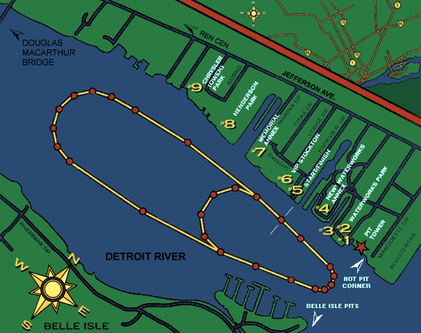

|
The map below shows the 2 race courses, and the numbers represent the paid viewing areas. The large course is for the Unlimited Hydroplanes while the smaller course is for the Unlimited Light, 5 Litre, and Jersey Speed Skiff classes. See the Belle Isle Map for beach viewing info, and a map to the Belle Isle Pit Area. |

|
All contents Copyright © 1997 Spirit of Detroit THUNDERFEST, except where noted.
Web page created by Brian Reed.
|